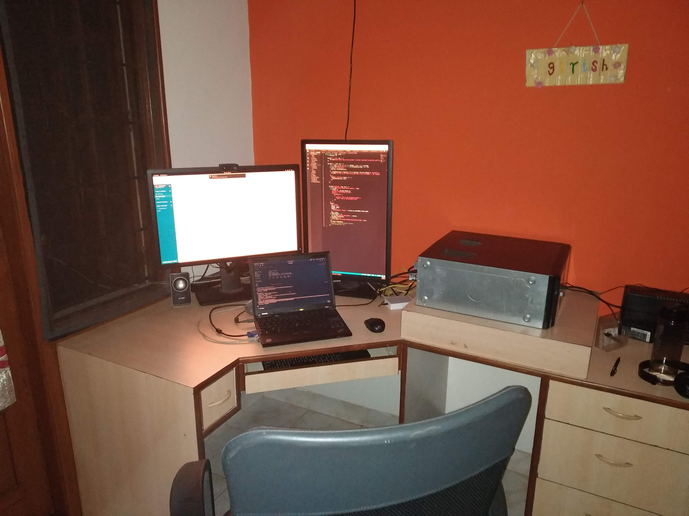

M Girish
About
A polyglot programmer who admires and writes elegant programs that are simpler with less defects.
Experience
-
Independent developer - Self employed - 2019
Working on building connectors and integration for OpenProject, Slack and Mattermost.
Project repositories-
-
Software Developer - 42Hertz (acquired by Cisco) - 2019
Developed micro-services for Cisco WebEx Teams.
My day-to-day activities included -
- Pairing with other developers in fixing bugs, understanding code and suggest possible ways of
arriving at a solution
- Understand user stories and estimate completion date
- Coding and writing integration tests for a user story
- Writing RESTful microservices to support CRUD operations
Problems I solved were -
- Any glitch in development environment setup of peers
- Unexpected code behaviour
Overall impact on product -
- Reduced defects
- Better performing software
Tools/Libraries - Spring Boot, JavaScript, Java
-
Project Engineer - Indian Institute of Astrophysics - 2018
Member of the India Thirty Meter Telescope (TMT) Software work package team co-ordinating the test and
integration of the software delivered by the vendor, carry out quality checks, participate in meetings
with the vendors and TMT Project Office.
Contributions -
- Used IntelliJ IDE with Java on Linux platform to test and debug code for the observatory
software.
- Used Jira for user stories and agile methodology
- Worked with automation of test suite using a shell script on Linux to setup a pipeline for build
and testing
- Fixed bugs through Git pull requests for the search indexing in documentation
- Created trade-study like document for capturing the user interface tool choices
- Developed a shell script to automate running of tests and uploading on Confluence(a wiki) page
using a RESTful API. Also provided Slack notification of test results to stakeholders regularly
Mentions -
Project information-
Tools/Libraries - Bash, Linux (Ubuntu), Java, Scala
-
Teaching Assistant - Indian Institute of Science - 2017
Contributions -
- Teaching, evaluation and course administration for Algorithms and Programming course for BS
students
- Created a script for automated result notification via email for consolidated scores to
students using Google APIs. This reduced the time involved and also ensured privacy of scores to
be known only to the respective student
Mentions -
Tools/Libraries - C, GNU/Linux, Vim, GDB
-
Software Engineer - Bharat Electronics - 2012 to 2016
Primary responsibilities -
- Understanding of URDs (User Requirements Description) for a given sub-system and eliciting
functional requirements
- Creation of SRD (Software Requirement Description) for capturing functional requirements
- Depiction of Operational Scenarios using flow charts and outlining data dependencies between
sub-systems using Microsoft Visio
- Database schema and tables design
- Design and development of GUI using HTML5 (for markup) and CSS3 (for styling)
- Client side scripting using JavaScript and JQuery for rendering data obtained from services and
to make AJAX requests to fetch data through RESTful web services
- Providing analytics to visualise information by customising plugins such as JQPlot for depicting
graphical information using charts like bar chart and line chart
- Debugging of client side code using Firebug extension for Mozilla Firefox
- Coding of RESTful web services for CRUD operations using Spring MVC, Java EE and testing using a
REST client
- Usage of Hibernate ORM and JPA for DML operations
- Unit Testing of developed modules using JUnit
Key Contributions -
-
Development of reusable JavaScript modules (Modular JavaScript Design Pattern) for a given
functionality
using AMD (Asynchronous Module Definition) and loading using Require JS to improve web-page
performance
issues and code maintainability
-
Usage of Underscore JS framework for coding of reusable HTML templates which can be rendered on
the fly. This helps in avoiding typo errors due to single or double quote mismatch in JavaScript
code which are hard to debug. It also provides separation of HTML template from JS thus
improving code maintainability
Tools/Libraries - JavaScript, Java, JQuery, Spring MVC, Hibernate ORM, Apache Maven, JBoss AS
Education
B.E. Computer Science, PES Institute of Technology, Bangalore, 2008-2012
Few writings
Medium articles
Your support motivates me to build productive software. Please Donate :)
